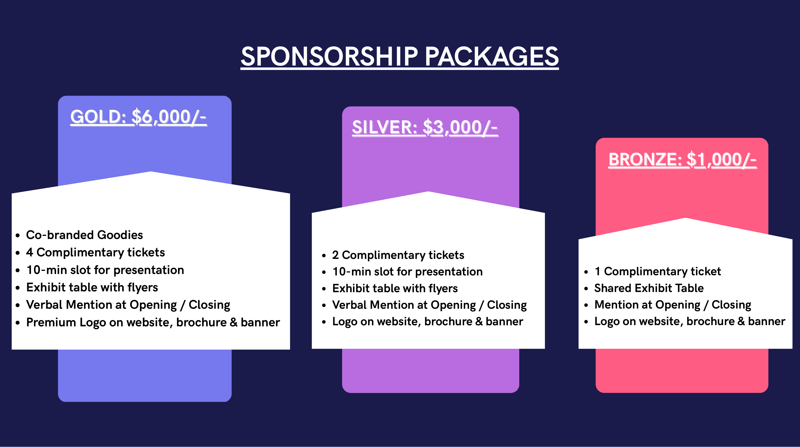
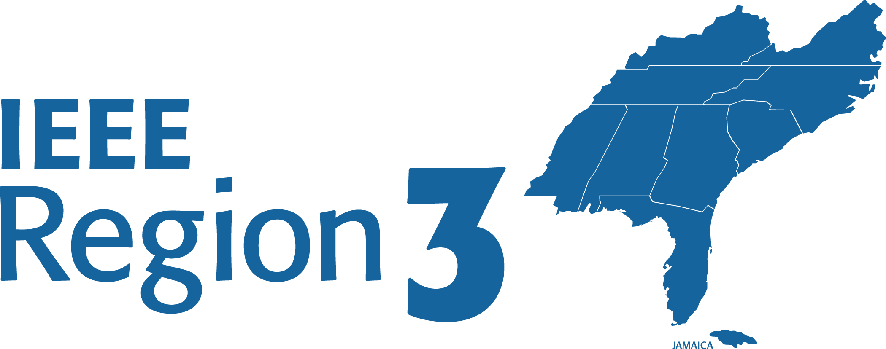
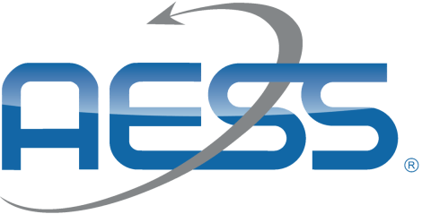
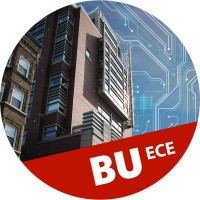

Sponsorship

Gold Sponsors

IEEE Region 1 is home to IEEE organizational units in the northeastern United States and comprises 22 Sections, while IEEE Region 2 is composed of four geographical Areas and comprises 20 Sections. Together, Regions 1 and 2 work at the local level to fulfill IEEE's educational, scientific, and professional goals for the benefit of members and the community by maintaining, enhancing, and supporting IEEE programs and strengthening relationships among IEEE organizational units.

IEEE Young Professionals (YP) is an affinity group that hosts social functions and partners with technical societies to organize events, connecting early-career engineers, scientists, and technologists. IEEE Regions 1 and 2 YP serves as a launchpad for your ambitions, bridging the gap between academic theory and real-world industry impact. Whether you want to sharpen your leadership skills, master emerging technologies, or build a lifelong network of peers, the Regions 1 and 2 YP community provides funding, mentorship, and global resources to help you thrive.
IEEE Women in Engineering (WIE) is a global network of IEEE members and volunteers that promotes women engineers and scientists and inspires girls to pursue careers in engineering and science. Its mission is to inspire women and girls worldwide in STEM fields, fostering technological innovation and excellence for the benefit of humanity. IEEE Regions 1 and 2 extend this mission across the northeastern and eastern United States through regional WIE leadership and local Section affinity groups.
MKS Inc. (NASDAQ: MKSI) enables technologies that transform our world. We deliver foundational technology solutions to leading edge semiconductor manufacturing, electronics and packaging, and specialty industrial applications. We apply our broad science and engineering capabilities to create instruments, subsystems, systems, process control solutions and specialty chemicals technology that improve process performance, optimize productivity and enable unique innovations for many of the world's leading technology and industrial companies. www.mks.com
Silver Sponsors


IEEE Region 3 is the geographic area of IEEE that covers the southeastern United States and Jamaica. Its mission focuses on the growth and development of members throughout their professional lives, with every member encouraged to be an active, informed, and satisfied participant. The Region fulfills IEEE Member and Geographic Activities strategic objectives at the local level by enabling its Sections, Chapters, and Student Branches to engage members.
The field of interest of the IEEE Aerospace and Electronic Systems Society includes the organization, systems engineering, design, development, integration, and operation of complex systems for space, air, ocean, and ground environments. These systems include navigation, avionics, mobile electric power and electronics, radar, sonar, telemetry, automatic test, simulators, and command and control. AESS provides a responsive and relevant professional society through conferences, publications, education, technical operations, industry relations, and member services.
Bronze Sponsors


Boston University's Department of Electrical & Computer Engineering is proud to sponsor the IEEE YP Summit 2026, hosted on our campus at the BU Photonics Building. From AI and photonics to autonomous systems, we're committed to launching the next generation of engineers.
IEEE Women in TEMS (WITEMS) is a new global community within the IEEE Technology and Engineering Management Society (TEMS), focused on empowering, connecting, and advancing women in technology and engineering management. Bringing together professionals, researchers, academics, entrepreneurs, and students worldwide, Women in TEMS aims to foster leadership, visibility, innovation, and impactful engagement through global initiatives and collaborations.
Contact
Surbhi Kanthed - IEEE YP Sponsorship Chair
surbhikanthed243@gmail.com
Cecelia Cheng - IEEE YP Summit Chair
cecelia.qw.cheng@gmail.com